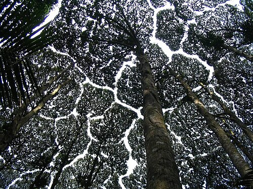

For the album by Trash Boat, see Crown Shyness (album).
Crown shyness(also canopy disengagement,[1] canopy shyness,[2] or inter-crown spacing [3]) is a phenomenon observed in some tree species, in which the crowns of fully stocked trees do not touch each other, forming a canopy with channel-like gaps. [4][5] The phenomenon is most prevalent among trees of the same species, but also occurs between trees of different species.[6][7] There exist many hypotheses as to why crown shyness is an adaptive behavior, and research suggests that it might inhibit spread of leaf-eating insect larvae.[8]

The exact physiological basis of crown shyness is uncertain.
[6] The phenomenon has been discussed in scientific
literature since the 1920s.[9] The variety of hypotheses
and experimental results might suggest that there are multiple
mechanisms across different species, an example of convergent
evolution.[citation needed]
Some hypotheses contend that the interdigitation of canopy branches
leads to "reciprocal pruning" of adjacent trees: trees in windy
areas suffer physical damage as they collide with each other during
winds; the abrasions and collisions induce a crown shyness response.
Studies suggest that lateral branch growth is largely uninfluenced
by neighbours until disturbed by mechanical abrasion.[10]
If the crowns are artificially prevented from colliding in the
winds, they gradually fill the canopy gaps.[11]
This explains instances of crown shyness between branches of the
same organism. Proponents of this idea cite that shyness is
particularly seen in conditions conducive to this pruning,
including windy forests, stands of flexible trees, and early
succession forests where branches are flexible and limited in
lateral movement.[6][12] According to this
theory, variable flexibility in lateral branches greatly
influences the degree of crown shyness.
Trees that display crown shyness patterns include: